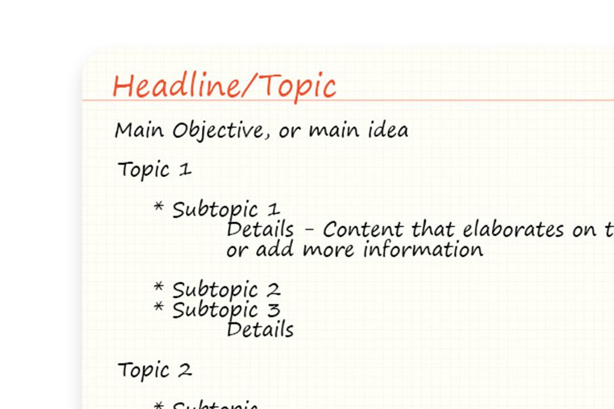
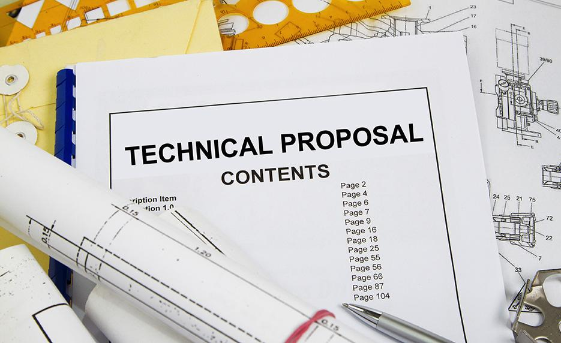
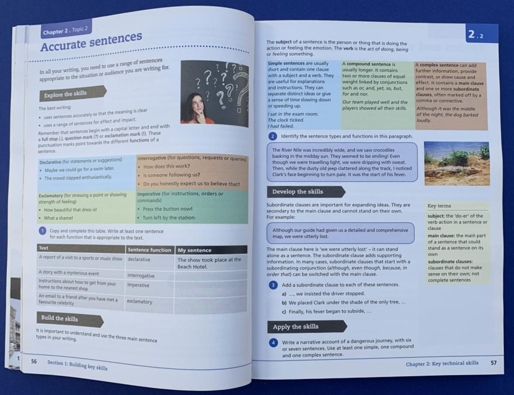
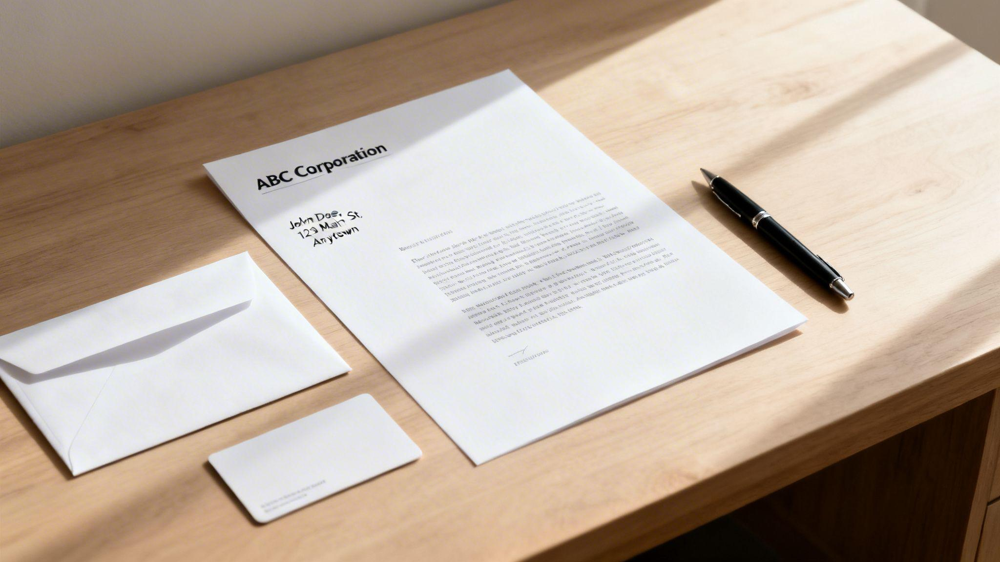

Technical Writing: Definition and Purpose
Learn what technical writing is, why it matters, and how it helps readers complete tasks or understand information.
Read this lecture →Learn what technical writing is, why it matters, and how it helps readers complete tasks or understand information.
Read this lecture →Practice the core principles of accuracy, brevity, and clarity for useful, reader-friendly documents.
Read this lecture →
Plan a document before drafting by arranging main ideas, supporting points, and details in a logical order.
Read this lecture →
Explore common technical documents, including reports, proposals, manuals, instructions, and research papers.
Read this lecture →
Review sentence parts, common sentence patterns, and grammar choices that make writing easier to follow.
Read this lecture →
Identify the standard parts of a formal letter and understand the purpose of each section.
Read this lecture →Learn how visual data displays communicate comparisons, change over time, and proportions.
Read this lecture →